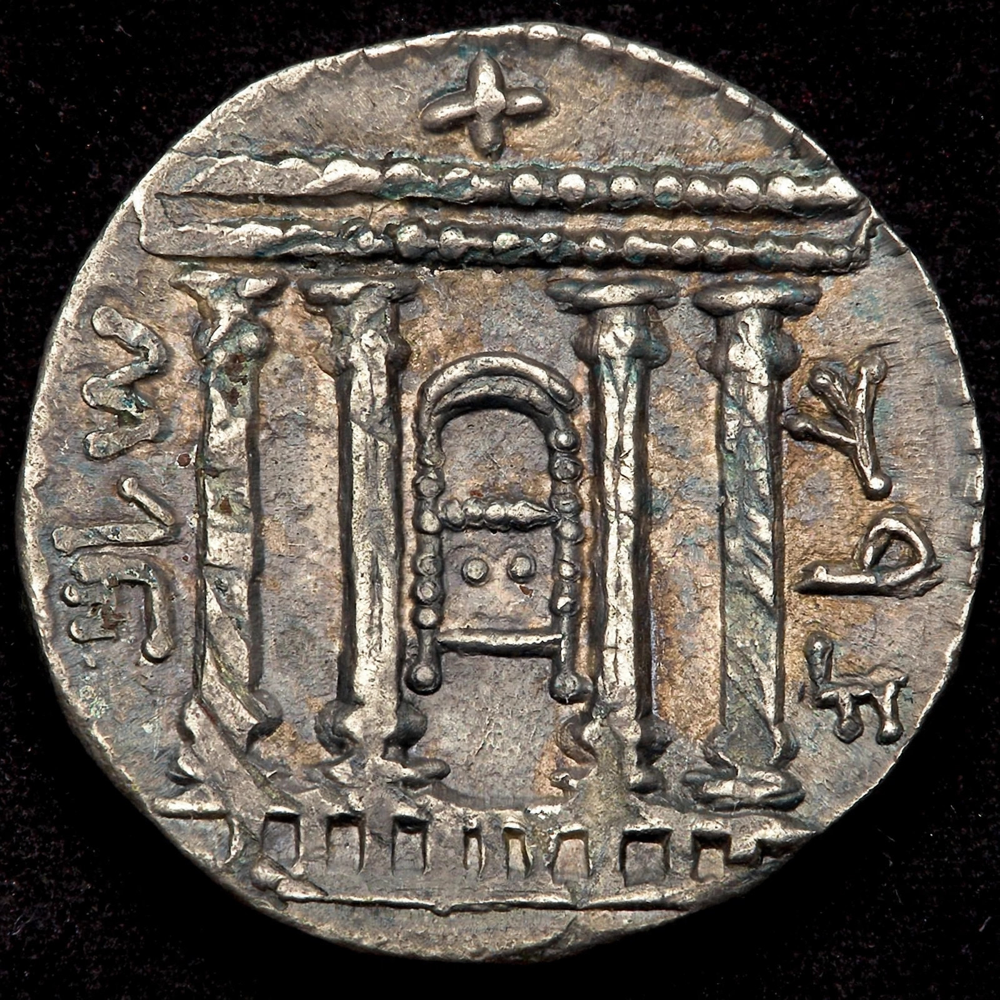

Bar Kokhba revolt
| Bar Kokhba revolt | |
|---|---|
| Date | AD 132–136 |
| Location | Judaea, Roman Empire |
| Result | Decisive Roman victory; destruction of Jewish communities in Judaea; Jerusalem refounded as Aelia Capitolina; province renamed Syria Palaestina |
| Commanders | Hadrian, Julius Severus / Simon bar Kokhba, Rabbi Akiva |

The Bar Kokhba revolt (Hebrew: מרד בר כוכבא) was a large-scale armed rebellion by the Jews of the Roman province of Judaea against the Roman Empire between AD 132 and 136. Led by Simon bar Kosiba — acclaimed by many followers, including Rabbi Akiva, as the messiah and renamed Bar Kokhba, "Son of the Star" — it was the last of the three major Jewish–Roman wars. Its crushing defeat ended Jewish political life in Judaea for centuries, scattered or enslaved much of its population, and was followed by Hadrian's refoundation of Jerusalem as the pagan colony Aelia Capitolina and the renaming of the province to Syria Palaestina.
Causes
Historians debate the immediate causes. Cassius Dio attributes the revolt to Hadrian's foundation of Aelia Capitolina on the site of Jerusalem, with a temple to Jupiter on the Temple Mount; the Historia Augusta blames a ban on circumcision. Both grievances likely contributed, atop decades of tension since the destruction of the Second Temple in AD 70 and the Diaspora revolt of 115–117.
Course of the war
The rebels prepared extensively, stockpiling weapons and digging underground hiding complexes in the Judaean hills and desert. They avoided pitched battles at first, using guerrilla tactics, and established an independent state that minted coins inscribed "Year One of the Redemption of Israel", appointed administrators, and controlled much of Judaea; whether they held Jerusalem is disputed. Rome responded by concentrating forces from across the empire under the general Julius Severus, who ground down the rebellion village by village and cave by cave. The last stronghold, Betar, fell in 135 (traditionally on Tisha B'Av), and Bar Kokhba was killed. Resistance in desert refuges, documented by letters found in the Judaean Desert caves — including orders signed by "Shimon ben Kosiba, Prince of Israel" — continued into 136.
Consequences
Cassius Dio reports 580,000 Jews killed and 985 villages destroyed, figures regarded as rhetorical but reflecting genuine catastrophe: Judaea was devastated, its Jewish population killed, enslaved or driven out, and the centre of Jewish life shifted to Galilee and the Diaspora. Jews were barred from Aelia Capitolina except on Tisha B'Av. In rabbinic memory Bar Kokhba was renamed Bar Koziba, "son of lies", for his failed messianism.
See also
First Jewish–Roman War · Simon bar Kokhba · Hadrian · Aelia Capitolina · Betar